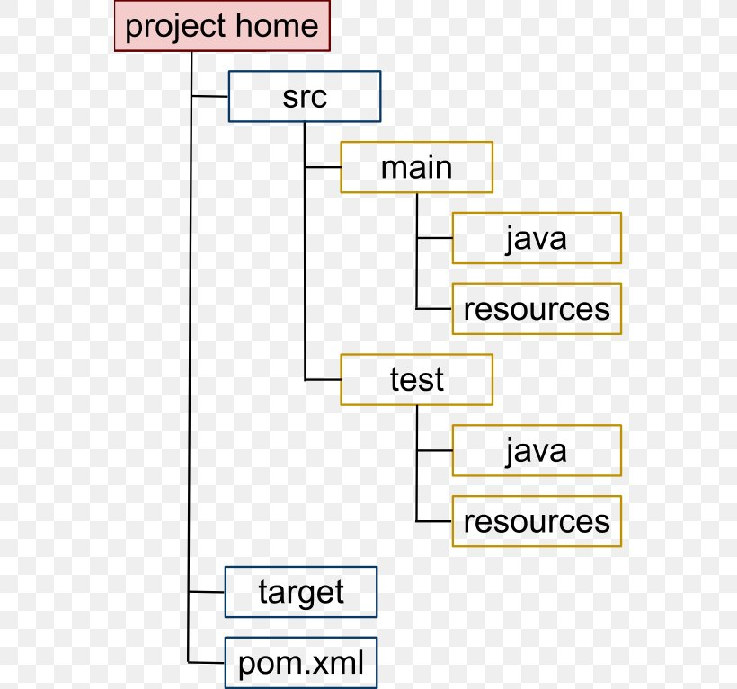
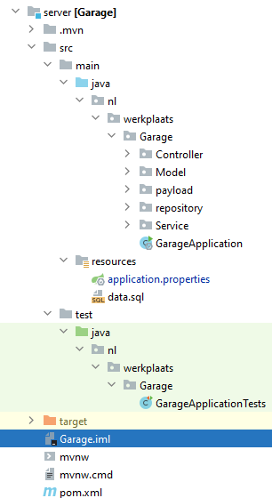
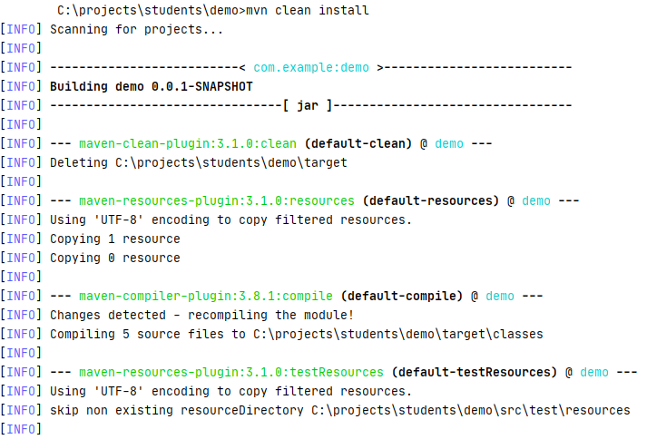
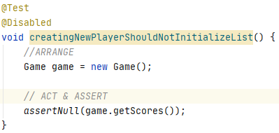
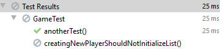
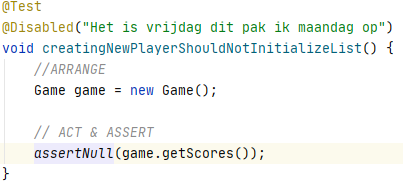

Java Programmeren
Les 6 - Maven & Junit
Inhoud
- Vragen?
- Maven
- JUnit
Maven
Maven is een project management-tool
- We gebruiken Maven voor een standaard project-structuur
- We gebruiken Maven om ons project te bouwen en te deployen
- We gebruiken Maven om dependencies op te halen
- Dit komt uit de maven central repository
- mvnrepository.com

Maven project structuur
Conventie boven configuratie
Folderstructuur
Folderstructuur - IntelliJ
Maven build lifecycle
Het proces van bouwen en distribueren is altijd volgens hetzelfde principe
Lifecycles
- Default
- Clean
- Site
Lifecycles
- Default
- Project deployment
- Clean
- Project cleaning
- Site
- Doet de site documentatie
Default lifecycle - Phases
- Validate
- Compile
- Test
- Package
- Verify
- Install
- Deploy
Default lifecycle - Phases (2)
- Validate
- Is alle informatie aanwezig?
- Compile
- Compileert de code
- Test
- Draait Unit-tests
- Package
- Verpak de code (in JAR/WAR)
Default lifecycle - Phases (3)
- Verify
- Is de package compleet?
- Install
- Installeert package in local repository
- Deploy
- Deploy de applicatie naar een remote repository (bijvoorbeeld mvncentral)
Clean lifecycle - phases
- Ruimt alles op van de vorige build
- Bijvoorbeeld: de target folder
Site lifecycle - phases
-
site
- Genereert de site-documentatie.
-
site-deploy
- Deployt naar gespecificieerde webserver.
Hoe gebruik je dit?
- Command line
- Op de plek waar de pom.xml staat
- Moet maven wel los geïnstalleerd zijn
- IntelliJ
Hoe gebruik je dit? (2)

Hoe gebruik je dit? (3)
Hoe gebruik je dit? (4)

Maven - Project aanmaken
Maven - Project aanmaken
File -> New -> Project...

Maven - pom.xml
Hier staat de configuratie en kunnen we libraries toevoegen
Maven - pom.xml

Maven - library toevoegen
- Ga naar https://mvnrepository.com/repos/central
- Zoek voor JUnit 5
- 5 minuten. Probeer deze zelf te vinden
Maven - JUnit 5 toevoegen
- Tip: XML en HTML komen redelijk overeen qua gebruik.
- Dependencies plaatsen we tussen de <depencies></depencies> tags
- Voeg deze toe voor </project>
- Plaats daartussen de gevonden XML.
Maven - JUnit 5 toegevoegd

Maven - Testen of het gelukt is
- Open: C:\Users\User_Name\.m2 of /Users/user_name/.m2
- Run mvn clean install in IntelliJ
- Bekijk het resultaat in de .m2 folder.
Pauze
Unittesten
Waarom zou ik mijn code automatisch willen testen?
Unit testen
- Valideren dat jouw code werkt
- Valideren dat morgen, overmorgen en volgend jaar je code nog steeds werkt
- Waarschuwingen ontvangen als onze wijzigingen problemen veroorzaken
Unittesten in de praktijk
- Unit testen zijn een belangrijk onderdeel van een programmeurs vaardigheden
- Je moet dit dus kunnen schrijven
- Je moet klunnen begrijpen waarom ze nodig zijn
- Hoge codekwaliteit kun je niet bereiken zonder unit-testen
- Een goed code reviewer zal je code zonder unit-testen niet goedkeuren
Unittesten voordelen
- Je wordt gedwongen na te denken over de functionaliteit
- Je kunt je code snel testen
- Testen zijn herhaalbaar. Ook door andere
- Een goede test documenteert je code
- Goede testen maken wijzigingen in de code makkelijker. Waarom?
VoorOORdelen
- Unit test is meer code schrijven
- Dubbele boekhouding: Wijzigingen in je code dwingen je ertoe de unittesten aan te passen.
Unittesten
Eerst wat theorie
Drie A's
-
Arrange
- Initieer de klasse/code die je nodig hebt
- Vul een lijst met data (bijvoorbeeld)
-
Act
- Voer de code uit
- Verkrijg de uitkomsten van de methodes
-
Assert
- Vergelijk de uitkomsten met de verwachte waardes
Unittesten - Tips
- Kleine code, zorgt voor kleine test
- Hoe meer verantwoordelijkheden, hoe complexer die code en de test
- Gebruik builder (design-pattern) en helper methodes
- Voorkom code-duplicatie met BeforeEach
- Zorg voor meerdere testen per methode
Unittesten Assert - tips
- Makkelijk te begrijpen
- Faalt bij onverwachte resultaten
- Controleert of de uitkomst de verwachte uitkomst is
- Is precies en beschermt tegen neveneffecten
JUnit
Junit 5 - Annotaties
- @Test
- @BeforeEach
- @AfterEach
- @BeforeAll
- @AfterAll
- @Disabled
Voorbeeld
import static org.junit.jupiter.api.Assertions.*;
@Test
public void test_getallenVertalerLaad1getal() {
GetallenVertaler vertaler = new GetallenVertaler();
vertaler.vulGetalMap("één", 1);
assertEquals(1, vertaler.getAantalGetallen());
assertEquals(new Integer(1),
vertaler.vertaalGetal("één"));
}
De Asserts
- assertEquals
- assertSame (==)
- assertNotSame
- assertTrue
- assertFalse
- assertArrayEquals
- assertNull
- assertNotNull
- fail
JUnit - Codevoorbeeld
https://github.com/hogeschoolnovi/SD-BE-JP-Unittest-examplesHet is vrijdag vijf uur.
Unit test niet af?


Het is vrijdag vijf uur.
Unit test niet af?


Het is vrijdag vijf uur.
Unit test niet af?


Het is vrijdag vijf uur.
Unit test niet af?


Samenvatting
- Maven is een Project Management Tool
- Unittesten zijn een effectieve manier om code te:
- testen,
- documenteren,
- kwaliteit te verhogen
- Een test moet klein en ondubbelzinnig zijn.
- Test 1 bewerking per unit test
- Gebruik @Disabled om Unittesten (kort) uit te zetten
Zelf aan de slag
- https://github.com/hogeschoolnovi/SD-BE-JP-Maven_and_Unittest-assignment
-
- Extra: Oefenen met Uncle Bob
- Clean code: TDD & Unit testing met Uncle Bob
- https://web.microsoftstream.com/video/ef849510-18d7-499d-8d02-543265673f6f